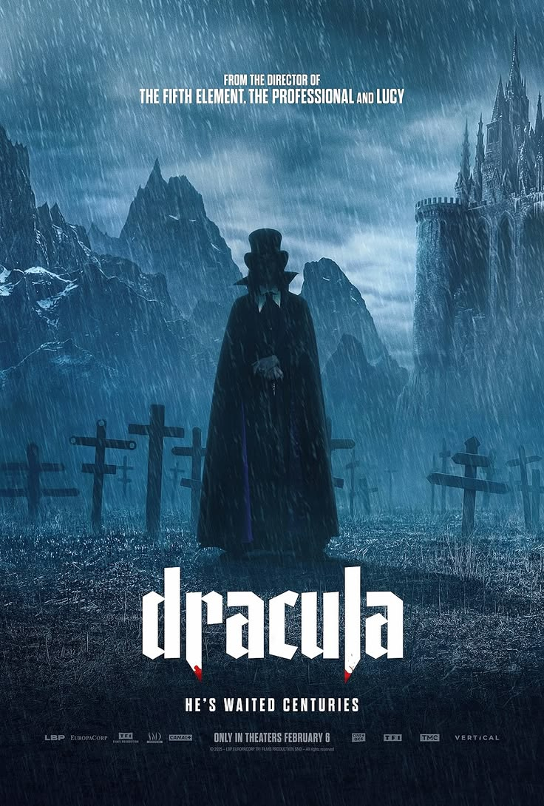
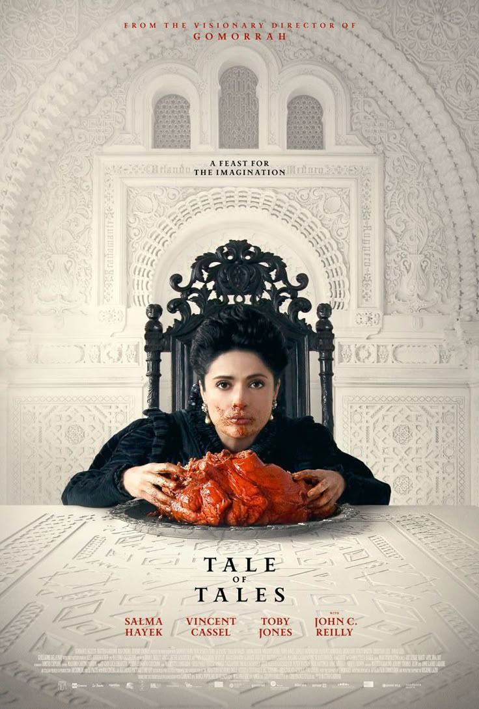
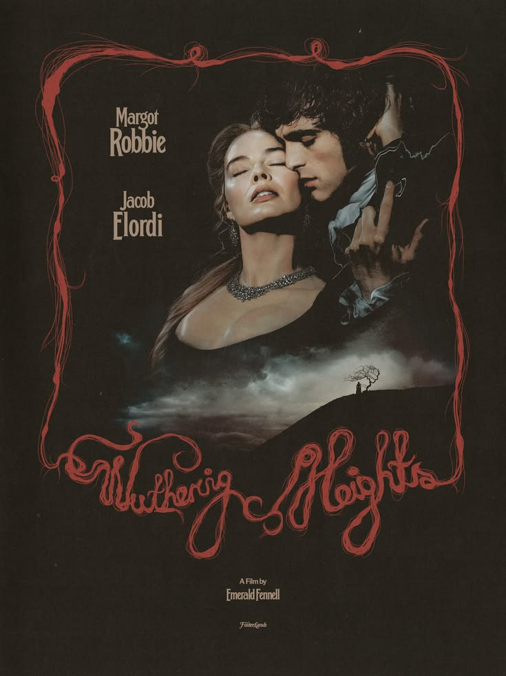
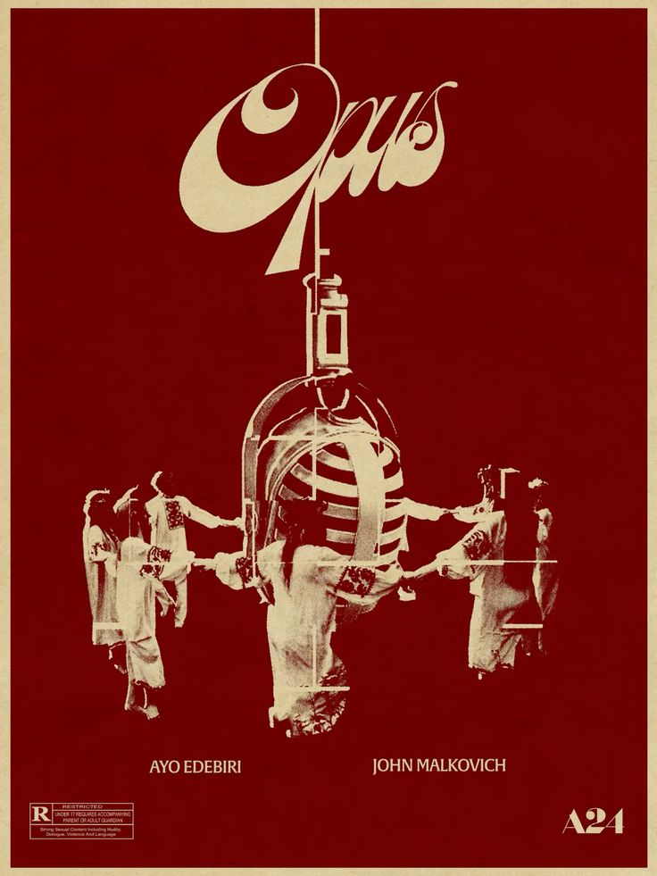
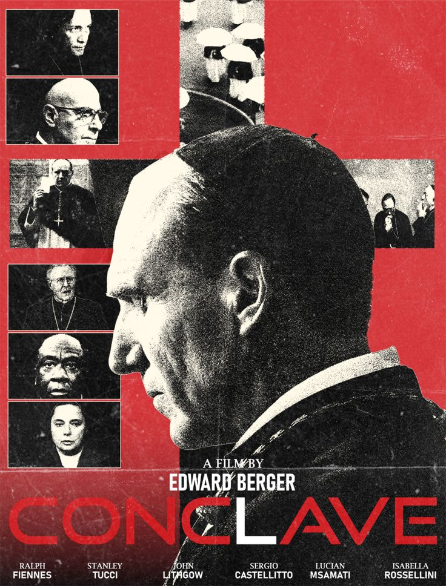

ENTRY I
Dracula
Director: Luc Besson
Starring: Caleb Landry Jones, Christoph Waltz, Zoë Bleu
I really enjoyed Caleb Landry's portrayal of Dracula. As someone who is not very versed in the Dracula story, I wasn't aware of the love story behind it all. A story about grief and choosing love over selfishness was done so well, and left me wanting to read the books and discover other adaptations.

ENTRY II
Tale of Tales
Director: Matteo Garrone
Starring: Salma Hayek, Vincent Cassel, Toby Jones, John C. Reilly
A movie I can watch over and over again. I am a sucker for gothic fantasy- this one being based in 17th century Nepolitan fairy tales by Giambattista Basile. The stories follow themese of obsession, vanity, and neglect. This movie really illustarted to me the concept of toxicity and how love can turn into ownership. It also spoke on vanity and how the societal obsession with beauty is a dangerous, and fleeting illusion.

ENTRY III
Wuthering Heights
Director: Emerald Fennell
Starring: Margot Robbie, Jacob Elordi, Hong Chau
Before I say my piece, I have sadly never read the books. With that I absolutely loved this film. For what it was: a story of destructive love, and desire, it did a great job for new audiences. I know though that when I do read the books I may emjoy the 2011 adaptation even more.

ENTRY IV
Opus
Director: Mark Anthony Green
Starring: Ayo Edebiri, John Malkovich, Juliette Lewis, Murray Bartlett
The concept of this movie is almost identical to "Blink Twice," a film directed by Zoe Kravitz. While I do prefer Blink Twice, this film showed more of Ayo Edebiri's range. It is a psychological thriller by A24. It speaks on themes such as Pop/ celebrity culture, and the dangers of parasocial relations and worship of celebrities. It is an important conversation that is extrememly relevant in todays society.

ENTRY V
The Ugly Stepsister
Director: Emilie Blichfeldt
Starring: Lea Myren, Thea Sofie Loch Næss, Ane Dahl Torp
I love this movie. I mentioned it in one of the earlier discussions of this course. A gothic take on Cinderella, this time based on one of her stepsisters. A story about vanity and obsession (Themes I love). It was interesting to see the perspective of the other sister who didn't get chosen. Obsessed with societal beauty standards, her insecurities are prevelant as she tries to become someone worthy of the prince.

ENTRY VI
Conclave
Director: Edward Berger
Starring: Ralph Fiennes, Stanley Tucci, John Lithgow, Isabella Rossellini
As someone who grew up catholic, I never knew how a future pope was selected so this was really cool. We understand that there is corruption everywhere and so much thought that goes into who becomes our world leaders. It is a story on real historical traditions, but highlights that there are bad seeds everywhere.